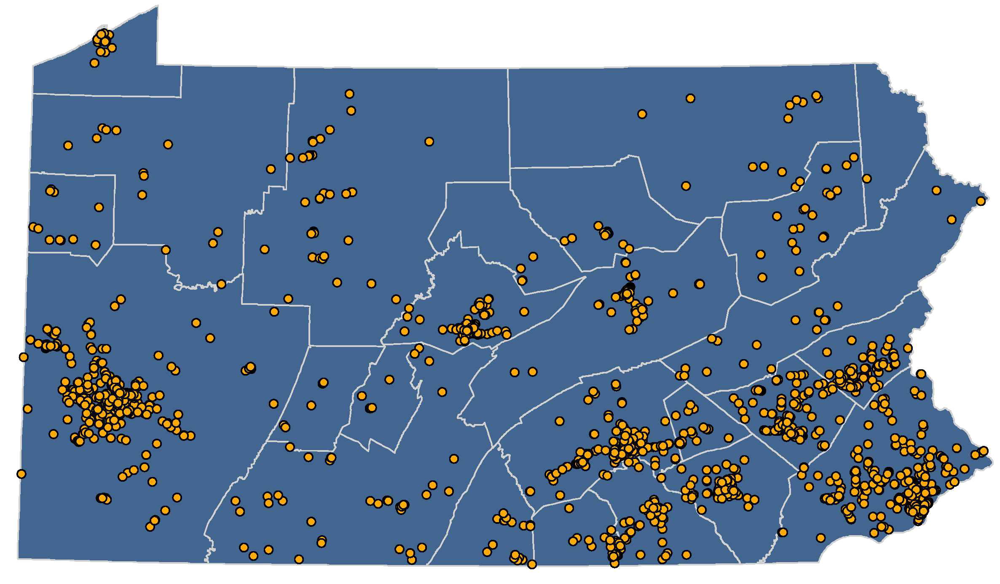

The Pennsylvania State Transportation Commission (STC) serves as the Pennsylvania Department of Transportation’s (PennDOT) board of directors. The 15 member board evaluates the condition and performance of Pennsylvania’s transportation system and assesses the resources required to maintain, improve, and expand transportation facilities and services. State Law requires PennDOT to update Pennsylvania’s Twelve Year Transportation Program (TYP) every two years for submission to the STC for adoption.
On May 6, 1970, Pennsylvania Act 120 was enacted. This legislation established PennDOT, the STC, and the Transportation Advisory Committee (TAC). This extremely important piece of legislation shifted the transportation focus from highways and bridges to the safe movement of people and goods using all forms of transportation. On May 6, 2020 the 50th anniversary of Act 120 was recognized as a significant milestone for PennDOT, the STC, and TAC!
I encourage you to learn more about our accomplishments,
current funding, and upcoming transportation projects near you.
Yassmin Gramian, P.E.
Secretary, PA Department of Transportation
Chairperson, State Transportation Commission
Pennsylvania took quick and decisive action in the spring of 2020 to slow the spread of the Coronavirus Disease 2019 (COVID-19) and protect all Pennsylvanians. Safe and reliable transportation remained just as important, if not more so, during the crisis. As such, it was extremely important to maintain essential services while enacting procedures to limit the spread of the virus. PennDOT temporarily halted all construction projects until plans for worker safety could be developed and implemented.
PennDOT also closed Driver License Centers and extended the expiration date for certain driver’s licenses, vehicle registrations, and safety and emissions inspections. Despite having never teleworked, many PennDOT employees quickly shifted to working from home when the offices closed. This included the unprecedented shift of the regional Traffic Management Centers that oversee the daily operations of Pennsylvania’s highways to remote locations.
Transportation projects listed in the TYP use a combination of federal, state, and local funding. The available amounts over the twelve years reflect anticipated financial investments based upon legislation, actual and anticipated budgets, and historical trends.
CLICK BELOW FOR DETAILS ON EACH TOPIC
Authorization legislation determines the amount and category of federal money distributed to states. The end of the most recent legislation, Fixing America’s Surface Transportation (FAST) Act on September 30, 2020 causes uncertainty for the amount of expected federal funding for highways, bridges, and public transit throughout the TYP. The potential bankruptcy of the Federal Highway Trust Fund (HTF) and the lingering effects of the COVID-19 pandemic on the economy only increase the uncertainty. However, the 2021 TYP assumes federal funding levels will remain flat, at 2020 levels, throughout the twelve years.
The Federal Highway Trust Fund (HTF) is composed of taxes paid at the fuel pump (18.4 cents per gallon on gasoline and 24.4 cents per gallon of diesel fuel) and other excise taxes. The money in the HTF is used for roadway, bridge, and public transit projects. For many years, the tax money coming into the fund has been less than what is allowed to be spent. As a result, Congress must occasionally refill the HTF through other sources of money.
The annual state budget process determines the funding amounts available for projects on the TYP through allocations from several monetary sources:
Overall funding at the state level is also uncertain throughout the TYP due to declining revenue from reduced gas tax receipts, inflationary pressures, and impacts of the COVID-19 pandemic.
Local municipalities, private entities, toll authorities, and transit operators also provide funds that are accounted for in the TYP. These funds are most often included when a match is required for state or federal funds.
The 2021 TYP contains over !!!!$TBD!!!! in projects involving all modes of transportation. The table below shows the distribution of funding in millions of dollars for the first four years, the second four years, and the third four years, and the total TYP.
In 2019 the Transportation Advisory Committee (TAC) released its “Risks to Transportation Funding in Pennsylvania” report. The report identified and analyzed several potential threats to the funding that supports the TYP. The impacts and implications identified in the report underscore the uncertainty involved in transportation funding, especially considering the unanticipated revenue pressures experienced due to the COVID-19 pandemic.
In addition to establishing PennDOT and the STC, Act 120 of 1970 also created the Transportation Advisory Committee (TAC). The 30 member TAC is comprised of 18 members of the public, 4 members of the Pennsylvania Legislature, and leaders from several state agencies.
The TAC conducts in-depth studies on key transportation issues to advise the planning process including the biennial Transportation Performance Report (TPR). View TAC studies and reports.
CLICK BELOW FOR DETAILS ON EACH PROCESS
The Twelve Year Transportation Program (TYP) is Pennsylvania’s official mid-range planning tool and is required by Act 120 of 1970. The TYP identifies and prioritizes projects and funding over a 12-year period. The first four years is the federally required Statewide Transportation Improvement Program (STIP) and regional Transportation Improvement Programs (TIPs).
The TYP is updated every two years in a collaborative effort between PennDOT, the STC, regional Metropolitan and Rural Planning Organizations (MPOs and RPOs), and the public. The TYP represents all modes and means of transportation including highways, bridges, public transit, aviation, and rail, as well as active transportation such as bicycling and walking.
The Statewide Long Range Transportation Plan (LRTP) is PennDOT’s largest and most comprehensive statewide transportation plan. It covers a 25-year forecast period. The Statewide LRTP is used to develop transportation policies, visions, and goals for the Commonwealth. The TYP must align with the Statewide LRTP which is updated every five to six years. The 2045 Statewide LRTP and Comprehensive Freight Movement Plan is expected to be adopted in 2021.
Each MPO and RPO develops their own LRTP. Each regional LRTP includes a list of transportation projects and assigns funding based on the amount of funding the region expects to receive over 20 years. Each regional LRTP is updated every four or five years to reflect new data and changes to regional priorities in transportation investments.
The projects listed in the first four years of the TYP are the federally-required Statewide Transportation Improvement Program (STIP). The STIP includes the 24 individual regional TIPs representing each MPO, RPO, and one independent county. It also includes the two statewide Programs: Interstate Management Program and statewide initiatives. Each TIP includes a list of projects with funding assigned for each year. In Pennsylvania, MPOs and RPOs update their TIPs every two years during the TYP update process. MPOs and RPOs conduct public involvement activities when developing their TIPs. The public involvement programs are defined in each regions’ Public Participation Plan.
The Public Participation Plan (PPP) provides guidance on opportunities for all people to contribute to the updates of the LRTP, TYP, and STIP. Pennsylvania recently updated its PPP with the help of stakeholders throughout the state. Each MPO and RPO has their own Public Participation Plan that is regularly updated.
Transportation Performance Management (TPM) is a strategic approach that uses system information to make informed investment and policy decisions to achieve national, state, and local goals for the reliable, predictable, and safe movement of people and goods. Projects listed in the TYP are aligned with these goals in order to create a better performing transportation system focused on safe, connected, and productive communities.
Each year the American Association of State Highway Transportation Officials (AASHTO), American Automobile Association (AAA), and the U.S. Chamber of Commerce hold American’s Transportation Awards competition to recognize projects and programs throughout the country. In 2019, PennDOT Connects won in the Quality of Life/Community Development Small Project category and was named one of the Top 12 projects nationwide.
PennDOT Connects engages community stakeholders, planning organizations, and local governments through collaboration meetings and training. The purpose of the initiative is to make sure community needs are identified at each phase of the planning process. PennDOT is committed to improving Pennsylvania’s transportation system through collaborative planning.
The TYP update process takes place over a two year period, beginning with the Transportation Performance Report (TPR) that details the condition of transportation in Pennsylvania. This is immediately followed by a call to action for the public to provide feedback on transportation priorities and needs. More information on public participation is provided below.
The TYP lists projects based on:
Projects are organized by the associated MPO or RPO and further described by transportation mode and county. Transportation project costs are allocated over one or more four-year periods based on the anticipated schedule of the project. The TYP also includes line items by funding category which are typically seen in the second and third four-year program periods. As new projects are identified, the line items are adjusted to reflect the detailed phases and costs associated to advance the project, all within fiscal constraints.
PennDOT submits the TYP to the STC every two years. The STC reviews and votes to adopt the TYP. PennDOT then sends the STIP (the first four years of the TYP) to the Federal Highway Administration, the Federal Transit Administration, and the U.S. Environmental Protection Agency for review and approval prior to the start of the federal fiscal year on October 1.
Transportation Program Development Process
Twelve Year Program Cycle
| 2021 | 2022 | 2023 | 2024 | 2025 | 2026 | 2027 | 2028 | 2029 | 2030 | 2031 | 2032 |
|---|---|---|---|---|---|---|---|---|---|---|---|
| 1st Four Years (TIP & STIP) | 2nd Four Years | 3rd Four Years | |||||||||
| Twelve Year Program (TYP) | |||||||||||
Do you know your Metropolitan or Rural Planning Organization?
Pennsylvania's statewide transportation planning effort begins at the local level with regional plans and programs. Pennsylvania has 19 Metropolitan Planning Organizations (MPOs), 4 Rural Planning Organizations (RPOs), and one independent county (Wayne County). Click on your county to see which planning organization represents you.
Public involvement is an important part of the TYP update process. Every two years, the STC holds a Public Comment Period to request feedback on local, regional, and statewide transportation issues and priorities. All responses are compiled, documented, and analyzed for use in the TYP, regional TIPs, and regional LRTPs. Public feedback plays a key role in the decision-making process for identifying and funding transportation projects.
During the 2021 TYP Update Public Comment Period, 6,398 public participants completed the online transportation survey. Survey respondents identified nearly 2,500 transportation concerns – 425 of which were already targeted by PennDOT’s planned projects.
CLICK BELOW FOR DETAILS ON EACH TOPIC
The 2021 TYP Public Comment Period included a Transportation Survey and an online public meeting.
The STC and PennDOT are committed to an effective and inclusive public participation program. The outreach effort is evaluated following each campaign to make sure all users of Pennsylvania’s transportation system have adequate and equal opportunity to participate.
The 2019 TPR was released by the STC on February 21, 2019 with the 2021 TYP Update Public Comment Period starting a few weeks later on March 11, 2019 and continuing through April 26, 2019
The online public meeting was conducted on Wednesday, March 20, 2019. The one-hour meeting featured the findings of the 2019 TPR and a half-hour interactive question and answer session. PennDOT and STC provided answers to all questions received, including those not answered during the online meeting. All questions and responses provided were posted on www.TalkPATransportation.com. There were nearly 2,200 live webinar participants (assuming one person per streaming device).
There were 6,398 participants who completed the online survey. Respondents identified 2,458 transportation issues. Of these issues, 425 of the transportation concerns identified by the respondents were already being addressed on the existing TYP. Survey respondents were recorded from each MPO and RPO region. Details for each section are provided below.
PennDOT and the STC summarized the public feedback and shared it with MPOs and RPOs in advance of the development of their regional TIPs. The survey analysis is posted on the STC website results page.
PennDOT, Pennsylvania Turnpike Commission (PTC), and Penn State University (PSU) began a partnership in 2018 to explore and advance a state-of-the-art training and testing facility called the Pennsylvania Safety Transportation and Research Track (PennSTART). PennSTART will address the transportation safety and operational needs of Pennsylvania: traffic incident management (TIM); tolling and intelligent transportation systems (ITS) technology; work zones; commercial vehicles; transit vehicles; and connected and automated vehicles. PennSTART as well as Pennsylvania Traffic Incident Management Enhancement (PennTIME), an organization of stakeholders involved in Transportation Incident Management, evolved from a 2014 Traffic Incident Management study completed by the State Transportation Advisory Committee.
For optimal experience viewing PennDOT OneMap, please use Chrome or updated IE/Edge.
The Twelve Year Program list of projects has been broken up by county to make searching easy. Please click on a county below to view the list of projects for that county. The Interstate and Statewide projects are grouped separately and can be viewed from the buttons below. Search and click the list to view funding details. Other resources for exploring transportation projects include: PA Transportation Projects and PennDOT One Map.
Beginning October 1, 2021, Pennsylvanians will need a REAL ID-compliant driver’s license, photo ID card, or another form of federally-acceptable identification (such as a valid passport or military ID) to board a domestic commercial flight or enter a federal building or military installation that requires ID. PennDOT began issuing REAL IDs on March 1, 2019 and issued over 800,000 within the first year.
The REAL ID initiative is required by both federal and state legislation. PennDOT worked with Homeland Security, the American Association of Motor Vehicle Administrators, and the Social Security Administration to enhance the integrity and security of state-issued driver licenses and identification cards. Real IDs are intended to aid in fighting terrorism and further reduce the risk for fraud.
PennDOT has deployed several online interactive tools to map and provide information on its various transportation projects throughout the Commonwealth. Through the PA Transportation Projects, PennDOT One Map and the Open Data Portal system websites, PennDOT can help you locate projects and stay engaged.
PennDOT’s Center for Program Development and Management (Program Center) under the Office of Planning is responsible for developing, managing, and updating the Commonwealth’s TYP for highways and bridges, mass transit systems, airports, and rail freight. It also coordinates with county and regional agencies on transportation long-range planning and short-range programming (TIP/STIP) issues. Members of the Program Center also serve as the Executive Staff to the STC.
TYP Inquiries:
(717) 783-2262
RA-PennDOTSTC@pa.gov

The website, www.TalkPATransportation.com, contains many resources about transportation planning. If you have any questions or comments, please use the email address or phone number listed above.
General Inquiries: (717) 783-2262 PA-PennDOTSTC@pa.gov